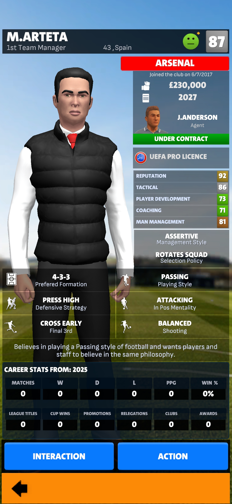

Would you rather be a chairma or a board director? I mean it's a choice that comes with personal human preference. Today, we'll be covering mostly on director side. We got 7 tips director should know before making decisions.
1.staff moderation.
Having the power to hire and sack may drive you crazy. Take a look a this staff. What changes could you possibly make? Probably none. Now when it comes to staff moderation you want to chose a manager who understands a plating style similar to the teams tradition. All your staff members shoul be prefering simlar style of playing. Now with that said, lets talk about the real moderation of these staff members, would you rather lose money and lose even more? By this i mean talk abou when recruiting a new manager and they request you to sack your current staff and he will be bringing in his new members. As a director of a potentially small team you should avoid such managers. This will cost you double the budget of building a new staff team and drain the teams funding. Its advisable to wait for the staff team contract to expire and recruit a new one or risk spending more on contract termination. This can also be made effective by offering the staff team short term contracts to spectate their progress.
2. Club finances
_ now alot of people strugle in this because of overspending and ignorance. "Saske man city is a wealthy club im going to sign all the stars i want" having a good financial health is profitable for the workability and progress of the club. Now this can be avoided by fairly paying the staff members and the players and also the amount of money used to buy the players. Now these are the major factors that drains the clubs finances. We'll talk more abou this later on.
3. Board satisfaction
_ now if you decide to sign with any club they give you what they expect from you. There is point most people forget when they agree to these contracts, the board style. Some boards are expectant some may be impatient. You already know what an impatient person will do to you if you fail to do what they want. Before signing the contract check on the board style and the available objectives they expect from you.
4. Tactics
_ lets talk about Tactics. Playing a chairman and director role minimises you on the tactical decision of the club. Your manager is in charge of the squad line up and tactics setup, you however can only be allowed to request squad rotation or demand improvements on the managers profile. Yes, there is a tactical suggestion option but mind who you suggest Tactics to. In rare cases when you keep on changing the Tactics of the managers they are force to leave the club and some are forced to leave with the staff memebers they came with.

5. Task set up
- in your profile there's an actio button where you can take various decisions. Consider changing the transfer listing to you, loaning players to assistant manager and ad brand to the commercial managers. Keep in mind you have to trust the responsible staff for the role, this mean you need a good commercial manager to assign him this task, however if you are in a small team or a built team i would consider you do this yourself.
6. Finance raise
- Now probably you look at your coins and be like what am i gonna do with those? Heres what you can do with them. The finance raising allows from local to billionaire investment, this will boost your anual bugets for the club and yes for a few coins. Consider using this option if you find your self in a tight budget situation, alternatively you can directly ask the board to increase the budget but, this may labd you in trouble as the board will be more strict about their objectives and in some case may labd you to the jobless gang.
7. Sponsors
- now as a director you need the clubs finance to be better. This is where sponsors come in, now with local t-shirt sponsors help boost the club profit, but there's an option many dont know about. Stadium advertising leads to even far grater profits. The stadium ad labels slots will be available according to your stadium level but the jackpot comes in the premium options. From 4k upto 20k varying with different clubs you can unlock premium advertising which involves the naming right that can sum upto huge number of cash. The naming rights alows the sponsors to change the stadium name to whatever they want for a specific period of time, with some clubs offering upto 130M. Some of the sponsors may pay the money in bits and half upfront. Now with the basic club management tips you should be ready to play FCM26. Of course there are more tips like loan deals, wonderkids and ticket pricing among many others. If you wanna see more videos and tutorial consider subscribing and leaving a like and we make our management careers posible. That's all we have for today see you on the next video on how you can maximises your clubs profit and avoid dept in the club.